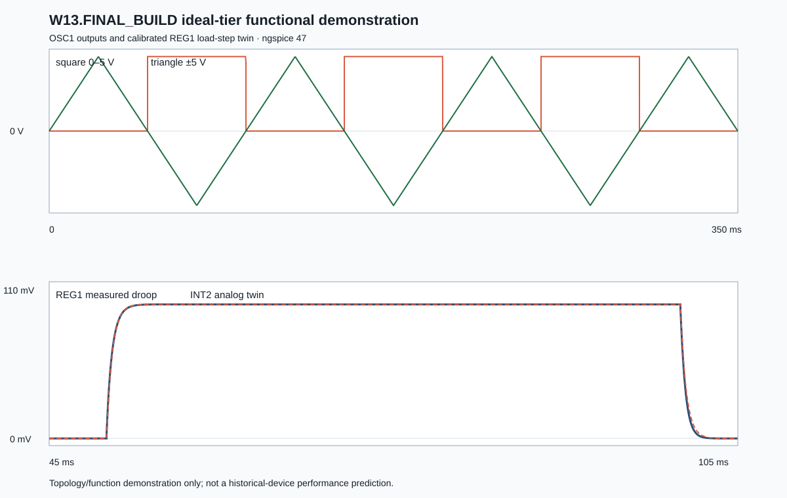

9.605 → 9.511 V
REG1 output, unloaded to loaded
W13.FINAL_BUILD · executable evidence report
The approved final schematic/netlist pair remains the connectivity authority. A separate enhanced deck makes that system runnable by supplying explicit models, loads, stimuli, analysis commands, calibration, numerical assertions, and a reproducible receipt.
Executive result
Pinned ngspice 47 executed one combined transient campaign containing OSC1, the REG1 physical-regulator topology, the SUM1 load-current encoder, and the INT2 calibrated leaky-integrator twin. The simulator converged, emitted the requested waveforms, and the independent runner passed every declared numerical gate.
Authority boundary
Exact conclusion: the enhanced final-system deck was executed. The untouched canonical projection was not executed because it intentionally contains symbolic values and structural model placeholders.
Simulator provenance
| Simulator | ngspice-47, circuit-level simulation program |
|---|---|
| Build | Compiled with the KLU Direct Linear Solver; creation date reported by the executable: 11 August 2026 |
| Executable used | C:\Users\simon\scoop\apps\ngspice\47\bin\ngspice_con.exe |
| Executable SHA-256 | 22D5CAE2BD32B2E39157A8D27BF457122F68285B72A9EBEFDF41551B628233AB |
| Invocation mode | Noninteractive batch mode, option -b |
| Dependency record | Pinned dependency lock |
C:\Users\simon\scoop\apps\ngspice\47\bin\ngspice_con.exe -b simulations\week13\w13-final_build-functional.cir
The requested nine-item completion
| # | Enhancement | Implementation |
|---|---|---|
| 1 | Runnable device interfaces | Project-owned dominant-pole op-amp subcircuit, voltage-controlled switch, and generic NPN/zener/diode model cards. |
| 2 | Explicit plant loading | 1 kΩ permanent load, 1 kΩ switched load, 47 µF output capacitance, 0.30 Ω ESR, and 100 Ω isolation. |
| 3 | Regulator transient | OSC1 square output controls the switched REG1 load in a 350 ms transient campaign. |
| 4 | Droop and time-constant extraction | Windowed unloaded/loaded averages and the first 63.212% crossing are calculated from saved waveform samples. |
| 5 | Twin-component derivation | The runner derives R_TWIN_LEAK and R_TWIN_DRIVE, then checks configured values within 2%. |
| 6 | Combined final run | OSC1, REG1, SUM1, and INT2 coexist in one deck and one transient solution. |
| 7 | Recorded outputs | Square, triangle, regulator output, and twin output vectors are written for independent post-processing. |
| 8 | Numerical assertions | Eight gates cover oscillator ranges, regulation, polarity, steady/transient tracking, time constant, and resistor calibration. |
| 9 | Plot and receipt | A deterministic SVG waveform plot and JSON receipt record measurements, hashes, simulator identity, and pass/fail state. |
Model tier
OPAMP_LP contains a voltage-controlled differential-gain source, one RC dominant pole, and a smooth tanh output limiter near ±14.5 V. It does not reproduce an LM301A or the Q1–Q13 discrete amplifier.
EERR NRAW 0 INP INM {A0}
RDOM NRAW NPOLE 1k
CDOM NPOLE 0 {1/(2*pi*FP*1k)}
BOUT OUT 0 V={14.5*tanh(V(NPOLE)/14.5)}
REG1 error amplifier: A0=30, FP=10 kHz. SUM1 and INT2: A0=100,000, FP=10 kHz.
The current-to-voltage scale is stated unambiguously as S_VI = 100 V/A: one simulated volt represents 10 mA. This resolves the earlier dimensional ambiguity in the label I_SCALE.
Campaign method
OSC1 square: 0–5 V, 50 ms high, 100 ms period, beginning at 50 ms. OSC1 triangle: approximately ±5 V at 10 Hz.
tran 50u 350m with Gear integration, reltol=1e-5, abstol=1e-10, and vntol=1e-7.
REG1 droop and 63.2% time are measured first. A 1 µF INT2 capacitor then gives derived leaky-twin resistors of 501.209 Ω and 5.326 kΩ.
The configured values—496.549 Ω and 5.276258 kΩ—came from the earlier calibration sample embedded in the deck. The rerun-derived values differ by less than 1%, inside the declared 2% gate.
Measured evidence
| Gate | Acceptance rule | Observed result | Status |
|---|---|---|---|
| Oscillator square | Low ≤ 0.01 V; high 4.99–5.01 V | 0.000 V to 5.000 V | PASS |
| Oscillator triangle | Minimum ≤ −4.9 V; maximum ≥ +4.9 V | −4.9998 V to +4.9974 V | PASS |
| Regulated output | Loaded output 9–11 V; droop 50–200 mV | 9.6046 V unloaded; 9.5105 V loaded; 94.110 mV droop | PASS |
| Droop polarity | Physical droop and twin response both positive | Both positive | PASS |
| Steady twin tracking | Magnitude error ≤ 0.5 mV | 2.153 µV | PASS |
| Transient twin tracking | RMS ≤ 3 mV; peak ≤ 6 mV | 0.542 mV RMS; 3.245 mV peak | PASS |
| Time-constant tracking | Difference ≤ 0.1 ms | Both sampled at approximately 0.5012 ms | PASS |
| Calibration resistors | Configured versus derived error ≤ 2% | Both within 1% | PASS |

Interpretation discipline
Defensible claim: the final machine’s intended mathematical signal flow and regulator-twin function work in the declared ideal-tier model. This is not yet a prediction of physical hardware performance.
Reproducibility
python simulations/week13/run_final_demo.py
The Python runner locates the pinned ngspice executable from the dependency lock, executes the deck, rejects simulator errors, parses the saved waveforms, calculates measurements, grades all gates, and regenerates the receipt and SVG plot.
| Functional deck | ED4616FD6E3B40E800F776E32C97EFD0B971DA53C4FCFA3080292E125F73E754 |
|---|---|
| Waveform CSV generated during recorded run | 6BD74CF79955E08DA0741DDCBA22F04E2917DD506CA1EB980AE12E3851D285B2 |
| ngspice log generated during recorded run | 37CF266CECEF49A5053F1B81C1806536A31793D6B52D78AACC69325F5C840D43 |
| Results plot | 5F42D42570838CB41FAAAD93359E45B3EF57799AD75F20F069F023AC9F6CC92A |
| Runner source | 9EB4623A0EC60569485B0D571FFC824E87967B6A01E53D8E4A0F70F354A276A2 |
{kind=link}
{kind=link}